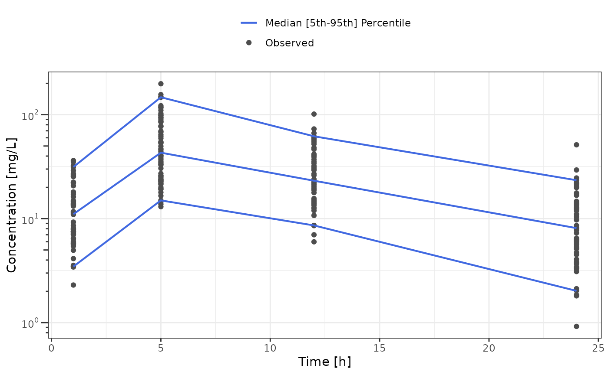
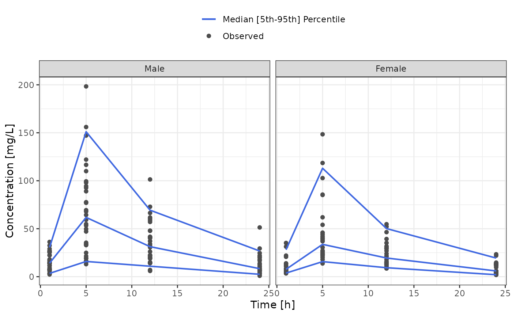
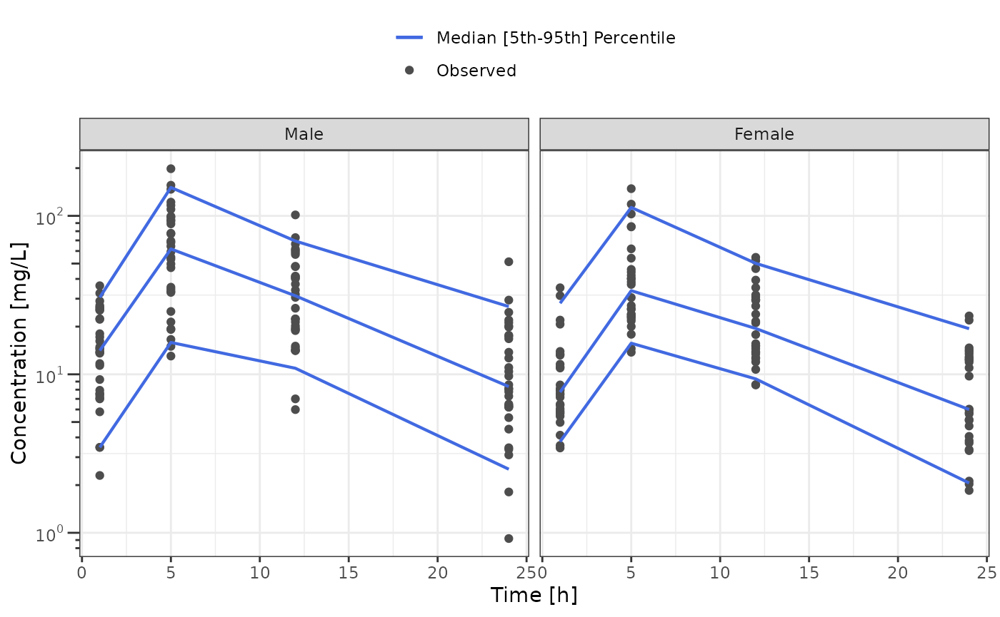
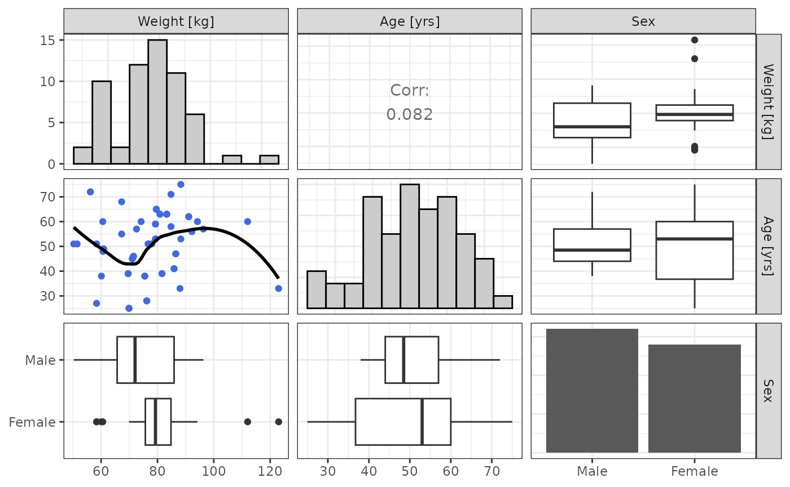

Dataset Analysis
dataset-analysis.Rmd
library(nonmem.utils)Interactive analysis
To analyse interactively a dataset you can use the shiny app below:
nonmem.utils::run_shiny("dataset-analysis")Quarto Report
To create a docx report of the dataset analysis you can use the quarto based function below:
nonmem.utils::report_dataset_analysis(
data_path = "my/dataset.csv",
meta_data_path = "my/dictionary.csv"
)Available analyses
Inventories
This section regroup 3 functions that aim at summarizing the
available PK data: data_inventory(),
cov_inventory() and cat_inventory()
Data inventory mainly provides number PK studies (or occasions), patients, measurements and doses.
The data inventory output is a named list of tables, including
"All" for the summary table that use all the data. When
cat variables are defined in the meta_data, the variable
labels ("Sex" in the example below) are added to the list
of tables.
pk_summary <- data_inventory(data_501, meta_data_501)You can also format the inventory to print them all in the same table
| Sex | Male | Female | All |
|---|---|---|---|
| Subjects | 32 | 28 | 60 |
| Studies | 32 | 28 | 60 |
| Doses | 32 | 28 | 60 |
| Observations | 128 | 112 | 240 |
| Studies per Subject | 1 | 1 | 1 |
| Doses per Subject | 1 | 1 | 1 |
| Doses per Study | 1 | 1 | 1 |
| Observations per Subject | 4 | 4 | 4 |
| Observations per Study | 4 | 4 | 4 |
Continuous covariate inventory provides summary statistics of the continuous covariates of the dataset.
The covariate inventory output is a named list of tables, including
"All" for the summary table that use all the data. When
cat variables are defined in the meta_data, the variable
labels ("Sex" in the example below) are added to the list
of tables.
pk_summary <- cov_inventory(data_501, meta_data_501)Here is an example printing all the tables below each other:
for (summary_label in names(pk_summary)) {
cat(summary_label)
cat("\n\n")
cat(knitr::kable(pk_summary[[summary_label]]), sep = "\n")
cat("\n\n")
}SEX : Male
| Statistics | Weight [kg] | Age [yrs] |
|---|---|---|
| N | 32.00 | 32.00 |
| Mean | 74.15 | 50.91 |
| Median | 72.05 | 48.50 |
| SD | 12.84 | 10.05 |
| Min | 50.30 | 38.00 |
| Max | 96.30 | 72.00 |
SEX : Female
| Statistics | Weight [kg] | Age [yrs] |
|---|---|---|
| N | 28.00 | 28.00 |
| Mean | 80.06 | 50.64 |
| Median | 79.30 | 53.00 |
| SD | 14.07 | 14.87 |
| Min | 58.40 | 25.00 |
| Max | 123.00 | 75.00 |
All
| Statistics | Weight [kg] | Age [yrs] |
|---|---|---|
| N | 60.00 | 60.00 |
| Mean | 76.91 | 50.78 |
| Median | 77.35 | 51.00 |
| SD | 13.64 | 12.42 |
| Min | 50.30 | 25.00 |
| Max | 123.00 | 75.00 |
Categorical covariate inventory provides count and percent summary the categorical covariates of the dataset.
The categorical covariate inventory output a table
pk_summary <- cat_inventory(data_501, meta_data_501)
knitr::kable(pk_summary)| Sex | Count | Percent |
|---|---|---|
| Male | 32 | 53.33333 |
| Female | 28 | 46.66667 |
Time profiles
The time_profile() and tad_profile()
functions respectively plot the dv as a function of
time and tad, along with median, 5th and 95th
percentile profiles.
Both functions include the bins argument that allows to
define the number of bins for the median, 5th, 95th profiles.
Both functions output a named list of plots, including
"All" for plots that use all the data. When
cat variables are defined in the meta_data, the variable
names ("SEX" in the example below) are added to the list of
plots. The corresponding plots will facet the time profiles by the cat
variable labels.
Each element of the list include a second named list:
"Linear", "Log" and "Percent BLQ"
that will display the time profiles in linear scale, logarithmic scale
or percent of BLQ values present in each bin.
tp_plots <- time_profile(data_501, meta_data_501)
#> Warning in geom_rug(data = filter(data, .data[[variable_names$blq]] > 0), :
#> Ignoring unknown aesthetics: text
#> Warning in geom_point(mapping = aes(y = .data[[variable_names$dv]], text =
#> tooltip_text(.data, : Ignoring unknown aesthetics: text
#> Warning in geom_line(data = vpc_data, mapping = aes(x = .data[["x"]], y =
#> .data[["ymin"]], : Ignoring unknown aesthetics: text
#> Warning in geom_line(data = vpc_data, mapping = aes(x = .data[["x"]], y =
#> .data[["ymax"]], : Ignoring unknown aesthetics: text
#> Warning in geom_line(data = vpc_data, mapping = aes(x = .data[["x"]], y =
#> .data[["y"]], : Ignoring unknown aesthetics: text
#> Warning in geom_rug(data = filter(data, .data[[variable_names$blq]] > 0), :
#> Ignoring unknown aesthetics: text
#> Warning in geom_point(mapping = aes(y = .data[[variable_names$dv]], text =
#> tooltip_text(.data, : Ignoring unknown aesthetics: text
#> Warning in geom_line(data = vpc_data, mapping = aes(x = .data[["x"]], y =
#> .data[["ymin"]], : Ignoring unknown aesthetics: text
#> Warning in geom_line(data = vpc_data, mapping = aes(x = .data[["x"]], y =
#> .data[["ymax"]], : Ignoring unknown aesthetics: text
#> Warning in geom_line(data = vpc_data, mapping = aes(x = .data[["x"]], y =
#> .data[["y"]], : Ignoring unknown aesthetics: text- Displaying time profiles in linear scale
tp_plots$All$Linear
- Displaying time profiles in log scale scale
tp_plots$All$Log
- Displaying time profiles by
"SEX"in linear scale
tp_plots$SEX$Linear
- Displaying time profiles by
"SEX"in log scale
tp_plots$SEX$Log
Covariates distribution and correlation
To analyze covariate distributions and potential correlations, 2
functions can be used: cov_plot() and
cov_cor().
The function cov_plot() allows graphical analyses of the
covariate distribution and correlation:
cov_plot(data_501, meta_data_501)
The function cov_cor() provides a table with
- Spearman correlation test results between continuous covariates
- ANOVA test results between continuous and categorical covariates
cov_table <- cov_cor(data_501, meta_data_501)
cov_table |>
highlight_significant() |>
knitr::kable()| Covariates | Weight | Age |
|---|---|---|
| Weight | ||
| Age | 0.207 (p: 0.113) | |
| Sex | Male: 74.15 (p< 0.001) Female: 5.91 (p: 0.094) |
Male: 50.91 (p< 0.001) Female: -0.26 (p: 0.936) |